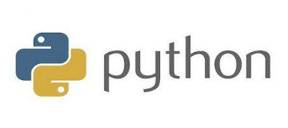

编译器与解释器
1. 编译与解释
( 1 ) 编译
将源程序翻译成可执行的目标代码，执行可执行程序文件，翻译与执行是分开的。编译程序跨平台性不好，不同操作系统，调用底层的机器指令不同，需为不同平台生成不同的机器码文件。编译程序每次修改源代码，都要重新编译，生成机器码文件。编译程序执行速度快，因为程序代码已经翻译成了是计算机可以理解的机器语言。
( 2 ) 解释
解释程序不产生目标代码，它逐条地取出源程序中的语句，边解释边执行，解释器把源代码文件边解释成机器语言边交给 CPU 执行。解释程序可跨平台使用，因为解释器已经做好了对不同平台的交互处理，用户写的源代码不需要再考虑差异性，源代码所有平台都可以直接执行。解释程序可以随时修改，立刻生效，改完源代码后，直接运行看效果。解释程序运行效率低，所有的代码均需经过解释器边解释变执行，速度比编译型慢很多。
2. 编译器与解释器
编程语言所写的代码想要运行，必须依赖自己语言的编译器或解释器。
( 1 ) 编译器 把源程序的每一条语句都编译成机器语言码，并保存成二进制文件，运行时计算机可以直接识别并运行，例如：C，C++，C#，Java，Go 等语言。
( 2 ) 解释器 只在执行程序时，从上到下把写过的代码一行一行的解释成机器码并给计算机来执行（边解释边执行），例如：Python，PHP，JavaScript 等语言。
3. Python解释器
windows/mac os 系统运行 Python 程序时使用 “解释器+文件路径”，在 Linux 系统中也可以这样来运行 Python 程序。但是，在 Linux 系统中存在一种特殊的执行方法。在给文件赋予可执行的权限后，使用 ./xxx.py。使用这种方式，执行的时候自动去找 Python 文件的第一行代码。第一行代码 #!/usr/bin/env python 指定了解释器的路径，等价于 /usr/bin/env/python xxx.py。
初识编码
1. ASCII
American Standard Code for Information Interchange，美国标准信息交换代码的英文缩写，基于拉丁字母的一套电脑编码系统，主要用于显示现代英语和其他西欧语言，其最多只能用 8 位来表示(一个字节)，即：28 = 256，所以，ASCII码最多只能表示 256 个符号。只表示英文，使用8位表示信息，有2的8次方种表示结果。
2. Unicode
称为统一码或万国码或单一码，一种在计算机上使用的字符编码。Unicode 是为了解决传统的字符编码方案的局限而产生的，它为每种语言中的每个字符设定了统一并且唯一的二进制编码，规定虽有的字符和符号最少由 16 位来表示(2个字节)，即：2 16 = 65536，注：此处说的的是最少2个字节，可能更多。使用32位表示信息，有2的32次方种表示结果。目前只使用了21位，Unicode一般用于计算机内存中做计算。
3. UTF-8
对 Unicode 编码的压缩和优化，它不再最少使用2个字节，而是将所有的字符和符号进行分类：ASCII 码中的内容用1个字节保存、欧洲的字符用2个字节保存，东亚的字符用3个字节保存。使用8位，用尽量少的位数来表示信息，节省存储空间。UTF-8中一个中文占3个字节，UTF-8一般可用于网络传输和数据存储。
4. UTF-16
Windows中将文件另存为 Unicode，此处 Unicode 实际上是 UTF-16，Unicode 不能写在硬盘中。与 UTF-8 不同的是，UTF-16 最多将 Unicode 压缩到16位。如果是ecs2则占用2个字节。如果是 ecs4 则占用4个字节(现在用的是这种)。
5. GBK2312
亚洲地区使用的编码，一个中文占两个字节
6. GBK
亚洲地区使用的编码，是GB2312的升级版，一个中文占两个字节
7. 如何选择编码
GBK中一个中文占用2个字节，UTF-8中一个中文占用3个字节，GBK 比 UTF-8 更节省空间，但是为了便于以后做项目扩展，强烈最好还是使用UTF-8的编码格式。
输入输出
1. 输入
input 是固定格式，是输入的意思，括号里边的内容是给用户看的提示内容，用户输入的内容被input接收后可以赋值给字符串类型的变量。格式：
input('提示内容')
需要注意的是：在 Python2 中使用 raw_input 获取的都是字符串，在 Python3 中使用 input 获取的都是字符串。
2. 输出
使用 print() 函数输出内容，Python2 与 Python3 输出的语法是不一样的，Python2：
print 'thanlon'
Python3：
print('thanlon')
Python3 中把 print 看作是一个函数的存在。
变量与常量
1. 变量
变量名只能包含：字母、数字和下划线，变量不能以数字开头，不能是 Python 中的关键字。
变量命名的一个建议：见名知意；用下划线连接（不建议使用驼峰式命名）
Python中的关键字：and，as，asset，break，class，continue，def，del，elif，else，except，exec，finally，for，from，global，if，import，in，is，lambda，not，or，pass，print，raise，return，try，while，with，yield
全局变量只在初次加载时执行！
2. 常量
常量就是将变量名大写，尽量保持不更改的一种量，常量一经定义就不允许去改变。
注释
1. 单行注释
# 单行注释
2. 多行注释
'''
多行注释1
'''
"""
多行注释2
"""
流程控制
1. if
name = input("输入姓名:")
if name == 'thanlon':
print(name)
2. if...else..
name = input("输入姓名:")
if name == 'thanlon':
print(name)
else:
print('你自己的名字都不知道了吧！')
3. if...elif...else...
a = eval(input('请输入一个数字：'))
if a > 66:
print('猜测的结果大了！')
elif a < 66:
print('猜测的结果小了!')
elif a == 66:
print('猜测结果正确')
构造字典和函数对应关系，避免重复使用 if else！
循环结构
1. while
如果条件为真，循环体执行；如果条件为假，循环体不执行：
while 条件:
# 循环体
简单的 while 循环：
count = 0
while count < 10:
count += 1
print(count)
2. for
for 循环不可以做死循环，while 循环可以做死循环。有穷尽优先使用 for，无穷尽使用 while。for 循环示例：
# coding:utf-8
name = 'thanlon'
for item in name:
print(item)
print(item)
'''
t
h
a
n
l
o
n
n
'''
for 循环练习，请打印1~10：
for item in range(1, 11): # range其实是列表
print(item)
3. break
break 关键字可用来终止当前循环。当程序执行到 break 的时候就结束当前这个 while 循环，break 以下的代码都不执行：
count = 0
while count < 10:
count += 1
if count > 8:
break
print(count) # 当count>8，print函数不会执行
name = 'thanlon'
for item in name:
if item == 'l':
break
print(item)
'''
t
h
a
n
'''
4. continue
continue 关键字用于退出当次循环，继续下一次循环：
count = 0
while count < 10:
count += 1
if count == 9:
continue
print(count)
name = 'thanlon'
for item in name:
if item == 'l':
continue
print(item)
'''
t
h
a
n
o
n
'''
5. while else
当满足 while 条件（ while 结构中的条件部分为 False）后，执行 else 中的语句：
count = 0
while count < 5:
print(count)
count += 1
else:
print('stop')
'''
0
1
2
3
4
stop
'''
如果通过其它方式（如 break 语句）跳出 while 循环，则执行 else 中的语句：
count = 0
while True:
if count > 5:
break
print(count)
count += 1
else:
print('stop')
'''
0
1
2
3
4
5
'''
字符串格式化
1. 格式化的意义
字符串格式化的意义是使用比较方便，下面的代码比较没有适合字符串格式化和使用字符串格式化的对比：
# 没有使用字符串格式化
name = 'Thanlon'
print(name + ' is play basketball……') # 写起来比较麻烦
# 使用字符串格式化
name = 'Thanlon'
print('%s is play basketball……' % (name,)) # 写起来计较方便
2. %s 与 %d
%s 与 %d 是占位符，s 表示字符串，d 表示数字。一般 %s 可以来接收 %d 的数据。
template = '我是%s，年龄%d，职业时%s。' % ('thanlon', 22, '软件开发工程师',)
print(template)
3. %%
如果在输出语句中使用了百分号，为了防止被认为是占位符，我们需要再使用一个百分号，用来转义单个 %。下面是一个实例程序：
name = 'Thanlon'
# 遇到%就认为是占位符
# template = '%s手机点电量是100%' % (name)
'''
ValueError: incomplete format
'''
template = '%s手机电量是100%%' % (name)
print(template)
'''
Thanlon手机电量是100%
'''
运算符
1. 算数运算符
| 运算符 | 描述 |
|---|---|
| + | 加，两个对象相加(Python是面向对象的语言，万物皆是对象) |
| - | 减 |
| * | 乘，两个数相乘或返回一个被重复若干次的字符串 |
| / | 除 |
| % | 取模，除法的余数 |
| ** | 幂 |
| // | 取整数，商的取整部分 |
2. 比较运算符
| 运算符 | 描述 |
|---|---|
| == | 等于，比较对象是否相等 |
| != | 不等于，比较对象是否不相等 |
| > | 大于 |
| < | 小于 |
| >= | 大于等于 |
| <= | 小于等于 |
3. 赋值运算符
| 运算符 | 描述 |
|---|---|
| = | 简单的赋值运算符 |
| += | 加法赋值运算符 |
| -= | 减法赋值运算符 |
| *= | 乘法赋值运算符 |
| /= | 除法赋值运算符 |
| %= | 取模赋值运算符 |
| **= | mi赋值运算符 |
| //= | 取整除赋值运算符 |
4. 逻辑运算符
| 运算符 | 描述 |
|---|---|
| and | 对于x and y，当x和y均为True时，x and y为True；x或y任何一个为False，x and y为False |
| or | 对于x or y，x和y任何一个为True，结果为True；x和y都为False，结果才是False |
| not | 取反，对于not x，x为True，not x为False；x为False，not x为True |
( 1 ) 在没有括号的情况下，not 的优先级高于 and，and 优先级高于 or。同一优先级哪个在前先计算哪个。
( 2 ) 对于 and，第一个值如果转换成布尔值是 True，则 value = 第二个值；如果第一个值换成布尔值是 False，则 value = 第一个值。如果有多个 and 条件，则从左到右依次进行上述流程。
( 3 ) 对于 or，第一个值如果是转换成布尔值是真，则 value=第一个值；第一个值转换成布尔值如果是假，则 value=第二个值。如果有多个 or 条件，则从左到右依次进行上述流程。
5. 成员运算
使用到的运算符：in 和 not in，用来判断元素是否在原字符串、字典、列表、集合种
print('t' in 'thanlon')
'''
True
'''
print('t' not in 'thanlon')
'''
False
'''
6. 运算符优先级
| 运算符 | 描述（表格从上到下优先级依次降低） |
|---|---|
| ** | 指数 |
| ~ , + , - | 按位取反，一元加号和减号 |
| * , / , % , // | 乘，除，取模和取整除 |
| + , - | 加法，减法 |
| >> , << | 右移，左移 |
| <= , >= , > , < | 比较运算符 |
| == , != | 等于,不等于 |
| = , %= , /= , //= , -= , += , = , *= | 赋值运算符 |
| is , is not | 身份运算符 |
| in , not in | 成员运算符 |
| not , and , or | 逻辑运算符 |
9. 单位转换
8bit = 1B
1024B = 1KB
1024KB = 1MB
1024MB = 1GB
1024GB = 1TB
1024TB = 1PB
1024PB = 1EB
1024EB = 1ZB
1024ZB = 1YB
1024YB = 1NB
1024NB = 1DB
主文件
1. 什么是主文件
运行的 Python 文件就是主文件
2. 区分主文件与非主文件
每一个 Python 文件都有一个变量 __name__，主文件中的 __name__ 与 字符串 "__ main __ " 相等，如果是不是直接运行的主文件，__name__ 与 "__main__" 是不相等的，下面这个例子可以证明这一点：
not_main.py：
print(__name__)
main.py:
import not_main
print(__name__)
'''
not_main
__main__
'''
下面的这个是一个很常见的例子，可以判断当前运行的文件是不是主文件：
not_main.py:
def func():
print('no_main')
main.py:
import not_main
if __name__ == '__main__':
not_main.func()
'''
no_main
'''
练习
1. 猜数字游戏
设定一个理想数字如：66，让用户输入数字，如果比66大，则显示猜测的结果大了；如果比66小，则显示猜测的结果小了;只有等于66，显示猜测结果正确，然后退出循环。
while True:
a = eval(input('请输入一个数字：'))
if a > 66:
print('猜测的结果大了！')
elif a < 66:
print('猜测的结果小了!')
elif a == 66:
print('猜测结果正确')
break
2. 猜数字限制猜测次数
count = 0
while True:
if count == 3:
print('大笨蛋！')
break
a = eval(input('请输入一个数字：'))
if a > 66:
print('猜测的结果大了！')
count += 1
elif a < 66:
print('猜测的结果小了!')
count += 1
elif a == 66:
print('猜测结果正确')
break
3. 使用循环输入1 2 3 4 5 6 8 9
i = 0
while i < 9
i += 1
if i == 7:
continue
print(i)
4. 求1-100的所有数的和
i = 0
sum_num = 0
while i < 100:
i += 1
sum_num += i
print(sum_num)
5. 输出1-100内的所有奇数
i = 1
while i < 100:
print(i)
i += 2
i = 1
while i <= 100:
if i % 2 != 0:
print(i)
i += 1
6. 输出1-100内的所有偶数
# coding:utf-8
i = 1
while i <= 100:
if i % 2 == 0:
print(i)
i += 1
7. 求1-2+3-4+ ... 99的所有数的和
'''
求1-2+3-4+5 ... 99的所有数的和
'''
sum_positive = 0 # 负数之和
sum_negative = 0 # 证数之和
i = 1
while i <= 99:
if i % 2 == 0:
sum_positive += i
else:
sum_negative += i
i += 1
print(sum_negative - sum_positive)
'''
50
'''
8. 简述ascii、unicode与utf-8编码
ascii：只表示英文，使用8位表示信息
unicode：使用32位表示信息
utf-8：压缩Unicode编码，使用8位表示信息。在utf-8编码中一个中文占3个字节，一般可用于网络传输和数据存储。
9. 简述位和字节的关系
1字节 = 8位
10. 判断逻辑语句的真假
判断下列逻辑语句的真假：
( 1 ) 1 > 1 or 3 < 4 or 4 > 5 and 2 > 1 and 9 > 8 or 7 < 6
=>False or True or False and True and True or False
=>False or True or False and True or False
=>False or True or False or False
=>True
( 2 ) not 2 > 1 and 3 < 4 or 4 > 5 and 2 > 1 and 9 > 8 or 7 < 6
=>not True and True or False and True and True or False
=>False and True or False and True and True or False
=>False or False and True and True or False
=>False or False and True or False
=>False or False or False
=>False
11. 求出下列逻辑语句的值
( 1 ) 8 or 3 and 4 or 2 and 0 or 9 and 7
=>8 or 4 or 0 or 7
=>8 or 0 or 7
=>8 oor 7
=>8
( 2 ) 0 or 2 and 3 and 4 or 6 and 0 or 3
=>0 or 3 and 4 or 0 or 3
=>0 or 4 or 0 or 3
=>4 or 0 or 3
=>4 or 3
=>4
( 3 ) 6 or 2 > 1
=>6 or True
=>6
( 4 ) 3 or 2 > 1
=>3 or True
=>3
( 5 ) 0 or 5 < 4
=>0 or False
=>False
( 6 ) 5 < 4 or 3
=>False or 3
=>3
( 7 ) 2 > 1 or 6
=>True or 6
=>True
( 8 ) 3 and 2 > 1
=>3 and True
=>True
( 9 ) 0 and 3 > 1
=>0 and True
=>0
( 10 ) 2 > 1 and 3
=>True and 3
=>3
( 11 ) 3 > 1 and 0
=>True and 0
=>0
( 12 ) 3 > 1 and 2 or 2 < 3 and 3 and 4 or 3 > 2
=>True and 2 or True and 4 or True
=>2 or 4 or True
=>2 or True
=>2